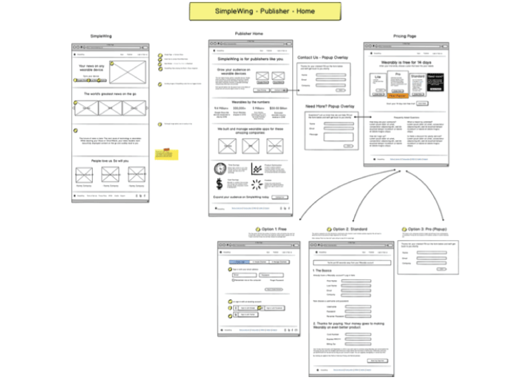
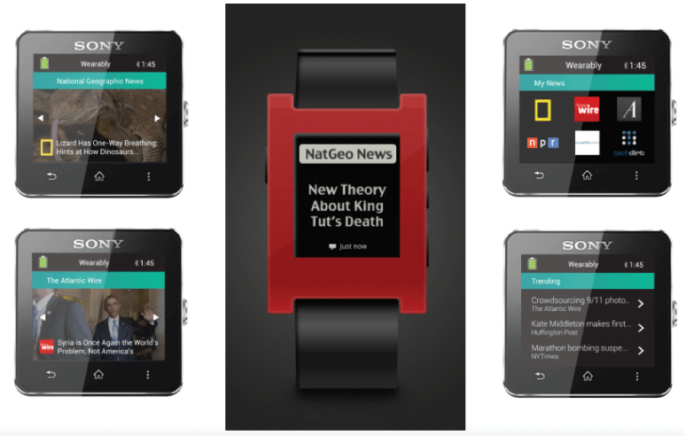
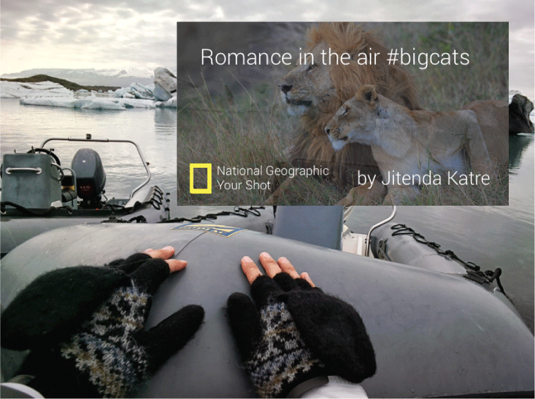

Stephanie Nguyen
Product Design + UX/UI Design + Research
Stephanie Nguyen
Product Design + UX/UI Design + Research

Product: Wearably is a media platform that allows publications to transform their RSS feeds into simple news-reading experiences for smartwatches (Sony Smartwatch and the Samsung Galaxy Gear) and heads-up displays like Google Glass. We worked on integrating news with partnerships from National Geographic, The Atlantic Media Company, Hacker News, and the New America Foundation. The products created and featured below include:
Problem: For the last century, newspapers were the dominant way people could get their news about politics, culture and the community around the world. The last 15 years have been a sea change. People go to web pages on their desktops. Now people lean back with a tablet in hand or read it on the go with their phones. Every step of the way, people read news. Those who produce the stories of our lives will need a way to communicate. We also noticed a growing smartwatch trend: the Apple Watch, Pebble, Samsung Galaxy Gear, the Moto360. With such limited screen real estate for these wearable devices, the challenge would be curating, targeting and letting readers know where and when they are on all of their devices. We realized that may be a complex challenge for companies that specialize in gathering news and that is where the idea for Wearably was born. We wanted to make it possible to have news on any wearable device.
Interviews + user research: We created a list of hundreds of the top news media providers and cold called and emailed them. Here were some of the biggest takeaways that gave us valuable insight moving forward with product development and design:
Wireframing: Along with designs for the app's interface on wearable devices, we learned we needed a web-based interface for the dashboard. This would mainly be for publishers to be able to get online and curate their news and headlines that would be delivered to their users. The wireframes below examines one of the versions of the website that we built. This version shows the landing page designed through Keynote.
Here, I tested a different wireframing service called Balsamiq. This platform was helpful since it included pre-designed, drag-and-drop elements such as search bars, navigation bars and social icons.
Wireframing for wearable devices: Designing for smartwatches, devices with the screen size of a small post-it note was a unique challenge. Based on our interviews with companies like Fortune, Bloomberg, The New Yorker and Wired, we gathered some important points to keep in mind when designing the user experience:
Product design: With Wearably, we can use publishers’ existing RSS feeds to automatically create and make apps available on Glass, the Sony SmartWatch 2, and (soon) the Samsung Gear that are formatted beautifully for the experience on each device.. A rough analogy might be WordPress or another content-management system: WordPress turns content automatically into interactive blogs and webpages for web and mobile, and we turn content automatically into the interactive cards that comprise apps on various wearable devices.. We can also send the information based on location--when you leave your house to walk to work, you receive your latest news updates from your favorite publishers.
The product was originally called SimpleWing when launched just for Glass; it was covered in TechCocktail as a product to “democratize” making apps for Glass and in Pando Daily for making Glass apps “as easy an RSS tap.” National Geographic released a statement saying we make “the publishing process extremely easy.” Our integration with the Sony SmartWatch 2 was featured by Sony in its booth in Berlin IFA, the equivalent of CES for Europe.
 Challenges:
Press and publications:Wearably was featured in publications such as Fast Company, Mashable, Venture Beat, Tech Cocktail, AdAge and Pandodaily. This app was a finalist in the Mobileys Mobile Future competition in 2013.